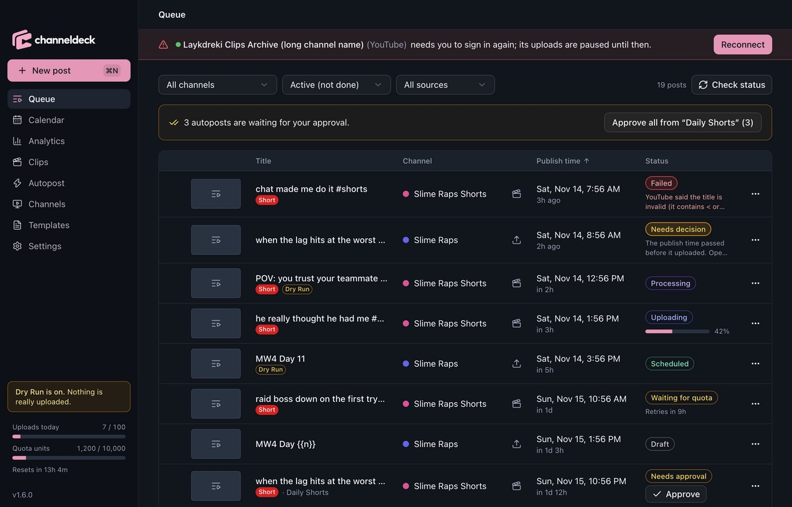
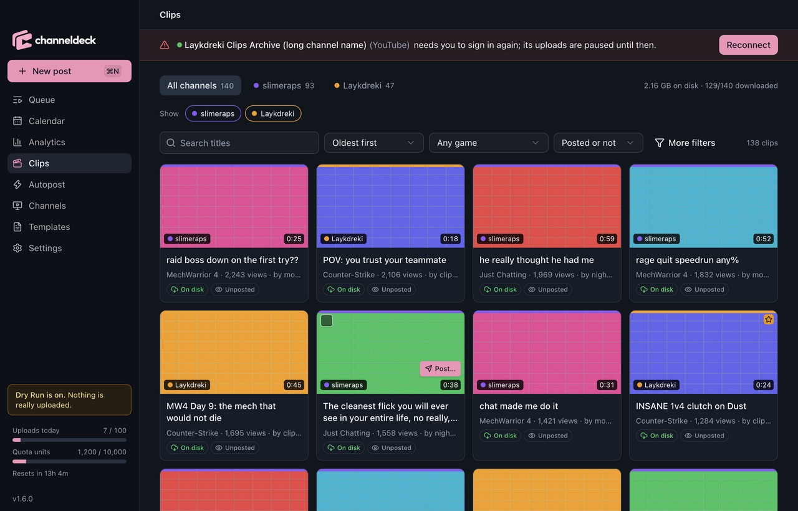
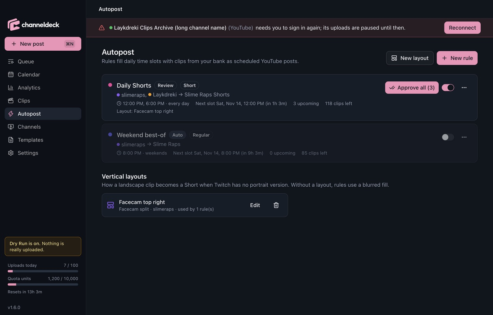

Run several YouTube channels from one Mac app.
ChannelDeck schedules uploads for every channel you run, and turns your Twitch clips into scheduled YouTube posts on the days and times you choose.
Free · Apple Silicon Macs · version 1.9.0 · what's new

Two jobs, one app
Upload scheduler
Queue videos for any connected YouTube channel and pick when each goes public. ChannelDeck uploads them ahead of time with their thumbnail and playlist, then tracks them until they're live.
Twitch clip bank and autoposter
Connect your Twitch channels and ChannelDeck pulls every new clip once a day, keeps them sorted on disk, and posts them to YouTube as Shorts or regular videos in your daily time slots.
Everything runs on your Mac. There's no ChannelDeck server and no account to make. The app talks straight to YouTube and Twitch using your own Google Cloud project and Twitch app, and your sign-ins are encrypted with the macOS Keychain.
Highlights
YouTube's own scheduling
Videos upload as private with a publish time, and YouTube makes them public on time. Your Mac doesn't need to be awake at the moment they go live.
Never posted twice
A clip can only go to a channel once. The database itself enforces it, so no rule or mistake can repost it.
Vertical Shorts
Turn a landscape clip into a Short with a blurred fill, a center crop, or a facecam-on-top split you draw yourself.
Review or Auto
Approve each autopost before it's queued, or let a rule run on its own. Swap a clip with one click before it uploads.
Calendar and analytics
See every channel's week or month at a glance, drag to reschedule, and check views, watch time and subscribers per channel or all together.
Safe with quota
A live quota meter, a warning before your rules go over, and uploads that wait for the daily reset instead of failing.


What you need
- A Mac with Apple Silicon (M1 or newer) and a recent macOS.
- A free Google Cloud project with the YouTube Data API turned on. The setup guide walks you through it in a few minutes.
- For clips: a free Twitch developer app (setup guide).